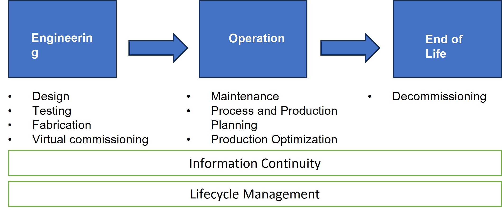

Digital twins for cyber security
Research notes by Suheyb Said Based on the chapter by Eckhart, M., & Ekelhart, A. (2019). Digital twins for cyber-physical systems security: State of the art and outlook. Security and Quality in Cyber-Physical Systems Engineering: With Forewords by Robert M. Lee and Tom Gilb, 383-412
Introduction
Cyber-Physical Systems (CPSs) are crucial for Industry 4.0, blending physical and virtual components to automate and intelligently operate various sectors. However, CPSs can be vulnerable to cyber-attacks, posing threats to public safety.
To address CPS security challenges, researchers explore the concept of digital twins, which are virtual replicas of physical objects, that help monitor, visualize, and predict the state of cyber-physical systems. Digital twins offer promising security-enhancing use cases for CPSs. Digital twins could enhance the security of smart factories by spotting security flaws during the design phase and supporting security testing and intrusion detection throughout the system’s lifecycle. However, creating and maintaining digital twins efficiently remains a significant research challenge due to overhead costs. Despite this the full potential and research challenges of digital twins in information security require further exploration.
The digital twin: origin
The concept of digital twins has its origins in NASA’s Apollo program, where a twin of a spacecraft was created for training and mirroring flight conditions based on data from the operational spacecraft. Over time, digital twins have evolved from physical copies to virtual models of systems due to technological advancements in simulations and connectivity.
The term “digital twin” was coined by Shafto et al. (2010) and initially focused on mirroring the life of air vehicles. However, in 2013, Lee et al. introduced digital twins to the manufacturing sector, where they simulate physical counterparts based on physical models. This concept expanded to other areas, including health monitoring, systems engineering, and managing various phases of a system’s lifecycle.
The concept of digital twins has different interpretations, often leading to confusion among the stakeholders. Key requirements for digital twins include real-time data, integration, and fidelity to accurately mirror physical counterparts. While the adoption of high-fidelity simulations with real-time data integration is envisioned for the future, most of the current digital twins lack these features. Data integration, either from past lifecycles or real-time acquisition, is essential for creating virtual replicas. However, there is no consensus on the minimum level of data integration required. Industry professionals often view digital twins as simulation models of physical objects that may not receive data instantly or continuously.
Digital twin is a virtual replica of a system that accompanies its physical counterpart during phases of its lifecycle, consumes real-time and historical data if required, and has sufficient fidelity to allow the implementation of the desired security measure.
Use Cases of Digital Twins in the Manufacturing Domain
The digital twin concept finds various applications in the manufacturing domain throughout the lifecycle of Cyber-Physical Production Systems (CPPSs). In the engineering phase, digital twins are used to efficiently to design, test, and fabricate systems, utilising 2D/3D models and physical simulations. During the operation phase, digital twins monitor the health of CPPSs in real-time, allowing for preventive/proper maintenance and process optimisation. In the end-of-life phase, digital twins retain knowledge about the system’s life for future reuse and assist in the proper disposal of materials. Overall, digital twins enhance efficiency, reduce downtime, and optimise the lifecycle management of CPPSs (Figure 1).

The digital thread
The digital thread involves linking data throughout various phases of a system’s lifecycle to increase efficiency in development and deployment. It enables an unbroken data link through the lifecycle and can be utilized to generate and provide updates to a digital twin. Semantic interoperability of tools used throughout the lifecycle is essential for implementing the digital thread.
While the digital thread can support digital twins and enhance the security of Cyber-Physical Systems (CPSs), it also represents an attractive target for attacks, as it contains valuable data. A compromised digital thread could lead to severe consequences, such as manipulated updates that put the digital twin into a malicious state. Therefore, implementing adequate security measures to protect each link within the digital thread is crucial.
Security Use Cases of Digital Twin
Digital twins can be utilised during the engineering phase to design more secure cyber-physical systems (CPSs). They can be combined with cyber ranges to simulate attacks and evaluate potential damages, leading to more robust and fault-tolerant CPS designs. Digital twins can also help reduce the attack surface by identifying weak spots and unused network services in the CPS specification. Furthermore, they enable testing security controls layer-by-layer, aiding in the implementation of a defence in depth strategy. Additionally, digital twins can be used to evaluate containment strategies for compromised devices, facilitating incident handling during the operation phase.
1. Intrusion detection
The concept of digital twins can be utilised for implementing Intrusion Detection Systems (IDSs) in Cyber-Physical Systems (CPSs). Two papers, namely Eckhart and Ekelhart (2018c) and Eckhart and Ekelhart (2018b), demonstrate how digital twins can be leveraged for this purpose.
In Eckhart and Ekelhart (2018c), a knowledge-based intrusion detection system is implemented. It specifies misuse patterns that the system would exhibit upon a compromise. The digital twins are continuously checked for rule violations based on safety and security rules.
In Eckhart and Ekelhart (2018b), a state replication approach is introduced, allowing digital twins to virtually mirror the behaviour of the real CPS during operation. This approach enables the implementation of a behaviour-specification-based IDS. The digital twins receive the same inputs as their physical counterparts, and intrusion detection is achieved by comparing their inputs and outputs. This technique generally yields a low false-negative rate and is capable of detecting previously unknown attacks.
2. Detecting Hardware/software misconfigurations
Detecting hardware and software misconfigurations in Cyber-Physical Systems (CPSs) can be achieved using digital twins. Digital twins, which replicate the functionality of real devices, should exhibit similar characteristics to their physical counterparts. Any deviation between the virtual replicas and the actual devices may indicate malicious actions or misconfigurations. For this use case, digital twins are employed to compare the configurations of physical devices with their corresponding virtual replicas. If any manipulation or discrepancy is detected, it can signal a potential security issue or misconfiguration. It’s essential to run the digital twins in an isolated and protected environment to prevent tampering by malicious actors.
3. Security Testing
Conducting security tests in operational technology (OT) environments, especially during CPS operation, can be risky and costly. To address this, the use of digital twins has been proposed as a solution. Digital twins allow security tests to be performed virtually on the replicas instead of real systems, ensuring no disruption to live systems and reducing the need for expensive testbeds. By using digital twins, security tests can be carried out both during the operational phase and the engineering phase. In the engineering phase, vulnerabilities can be identified and fixed early in the CPS lifecycle. Moreover, the challenge lies in striking a balance between the fidelity of digital twins and the costs involved, ensuring that security tests yield valuable results while keeping expenses in check. Some approaches, like the one proposed by Bitton et al. (2018 ), focus on developing cost-effective specifications of digital twins to support security tests within a certain budget.
4. Privacy
Damjanovic-Behrendt (2018b) studied how digital twins can be used to protect the privacy of smart car drivers. The work explores automated privacy assessments based on a virtual replica of a smart car that continuously receives real-time data from onboard sensors. An example is given where an insurer offers usage-based insurance using data from digital twins. Machine learning methods are integrated into the digital twins to classify personal data, which is then anonymised before being transferred to the insurer, ensuring customer privacy rights are preserved and GDPR requirements are met. While the focus was on smart cars, the approach could potentially be applied to other types of CPSs, including smart grids, transportation systems, and medical CPSs, offering privacy-enhancing techniques for these domains as well.
5. Training
Digital twins can be used as a platform for system testing and training. Since digital twins exist virtually and operate in isolated environments, they are well-suited for testing new defences before implementation and training personnel to respond to cyber incidents. In combination with a cyber range, attacks can be launched against digital twins for training and testing purposes. The digital-twin framework proposed by Eckhart and Ekelhart (2018c) also supports system testing. Real devices can be interfaced with the framework to test their behaviour. The framework can be used to uncover weaknesses and train information security personnel in implementing effective defences in response to attacks. Data collected during these exercises can be valuable for risk assessments.
6. Secure Decommissioning
When CPSs and ICSs (Industrial Control Systems) reach their end-of-life phase, it is crucial to ensure secure decommissioning. Digital twins can assist in this process by helping to properly dispose of materials and answer questions related to media sanitization. They can also aid in ensuring that data security requirements are met during the disposal of the digital thread and the digital twins themselves. Proper archiving and secure closure of the digital twins must be ensured to prevent unauthorized access and data breaches during decommissioning.
7. Compliance
Tauber and Schmittner (2018) highlight the significance of monitoring the security and safety of Cyber-Physical Systems (CPS) during their operational phase. They propose that digital twins can play a crucial role in this process by accurately reflecting the behaviour of CPS throughout their entire lifecycle. By continuously monitoring and documenting security and safety aspects through digital twins, organizations can provide evidence of meeting security standards, such as IEC 62443, and comply with legal requirements. With increasing regulatory requirements for CPS operators, integrating security and legal compliance support into digital twins becomes valuable. This approach allows for better control and oversight of CPS operations, ensuring that they adhere to industry standards and legal obligations, thereby enhancing the overall security and resilience of critical infrastructure.